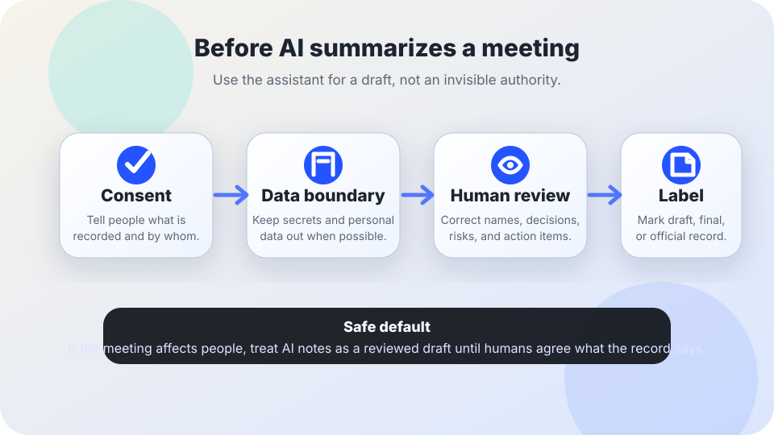

Meetings and summaries
AI meeting notes safety checklist
AI transcription and summary tools can make meetings easier to follow, but they can also capture sensitive information, miss context, exclude people who were not properly notified, and turn a rough draft into a false record. Use this checklist before inviting a bot into the room.
The short answer
Do not use AI meeting notes as an official record until everyone knows the tool is present, sensitive data boundaries are clear, a human has reviewed the output, and the final document is labeled accurately.
NIST’s AI Risk Management Framework describes trustworthy AI in terms including validity, reliability, safety, security, accountability, transparency, privacy, and fairness. In a meeting, those ideas become practical questions: who consented, what was captured, who corrected the draft, and what decision the notes are allowed to support.

Before the meeting
- Name the tool and purpose. Tell participants if transcription, recording, summarization, action-item extraction, sentiment analysis, or attendance tracking will be used. A vague “AI will help” notice is not enough.
- Set a consent path. Explain whether participants can opt out, turn off recording, join by another channel, or request a non-AI note-taking process. If people cannot freely opt out, use extra caution.
- Define the data boundary. Decide what should not be said or uploaded: medical details, student records, personnel issues, trade secrets, legal advice, security incidents, client data, private addresses, or anything not needed for the meeting purpose.
- Check retention and sharing. Know where transcripts, prompts, recordings, summaries, chat logs, and generated tasks are stored; who can access them; whether they train a model; and how long they remain available.
- Plan accessibility. Make sure the tool helps rather than replaces accessible meeting practice: captions, interpreters, plain agendas, screen-reader-friendly notes, and time for correction.
During the meeting
- Start with a spoken and written notice that AI notes or transcription are active.
- Pause the tool for confidential, legally sensitive, safety-sensitive, or personal sections unless capture is necessary and approved.
- Do not ask the AI to infer emotion, intent, truthfulness, productivity, disability, identity, legal status, or blame from meeting behavior.
- Keep a visible human owner for notes and decisions. The AI can draft; it should not quietly decide what mattered.
- If a participant says the tool is creating harm or confusion, pause and use a simpler note-taking method.
After the meeting
- Review before sharing. Check names, dates, decisions, action items, dissent, uncertainty, and context. Meeting summaries often sound more confident than the conversation was.
- Label the document. Use plain labels such as “AI-generated draft,” “human-reviewed summary,” “approved minutes,” or “not an official record.”
- Separate transcript from record. A raw transcript may contain side comments, personal data, jokes, errors, or confidential material. Do not treat it as automatically appropriate to forward.
- Give people a correction window. Let participants flag misattributions, missing objections, incorrect action items, or sensitive details that should not be retained.
- Delete what you do not need. Retain only what the organization has a legitimate reason and policy to keep. The U.S. National Archives and Records Administration’s records-management guidance is a useful reminder that records need deliberate policy, not accidental accumulation.
Red flags
- The bot joins automatically without a clear invitation, visible notice, or owner.
- The summary is forwarded to people who were not allowed to hear the meeting.
- The tool stores transcripts in a personal account instead of an approved organizational workspace.
- A manager uses AI summaries to evaluate workers without notice, job relevance, appeal, or human review.
- The AI invents agreement, erases dissent, or turns “we should explore this” into “we decided this.”
- The vendor cannot explain security controls for recordings, prompts, transcripts, integrations, or administrator access.
If the notes could affect someone’s job, education, benefits, safety, legal position, or reputation, review and recourse are not optional.
Copy-and-send meeting notice
Sources and further reading
- NIST — AI Risk Management Framework
- UK Information Commissioner’s Office — generative AI and data protection consultation series
- OWASP — Top 10 for Large Language Model Applications
- CISA — Secure by Design
- U.S. National Archives and Records Administration — Records Management
This guide is educational, not legal advice. For regulated records, labor rules, education records, health information, legal privilege, or public-sector retention duties, use qualified local guidance.